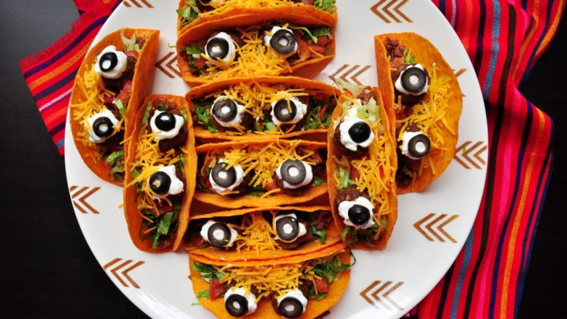
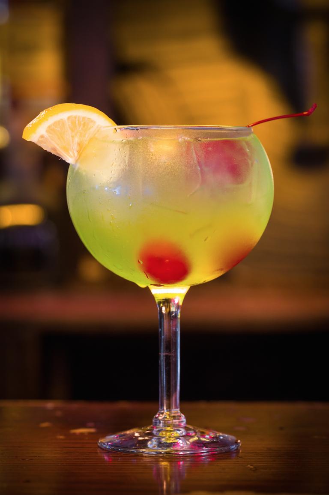
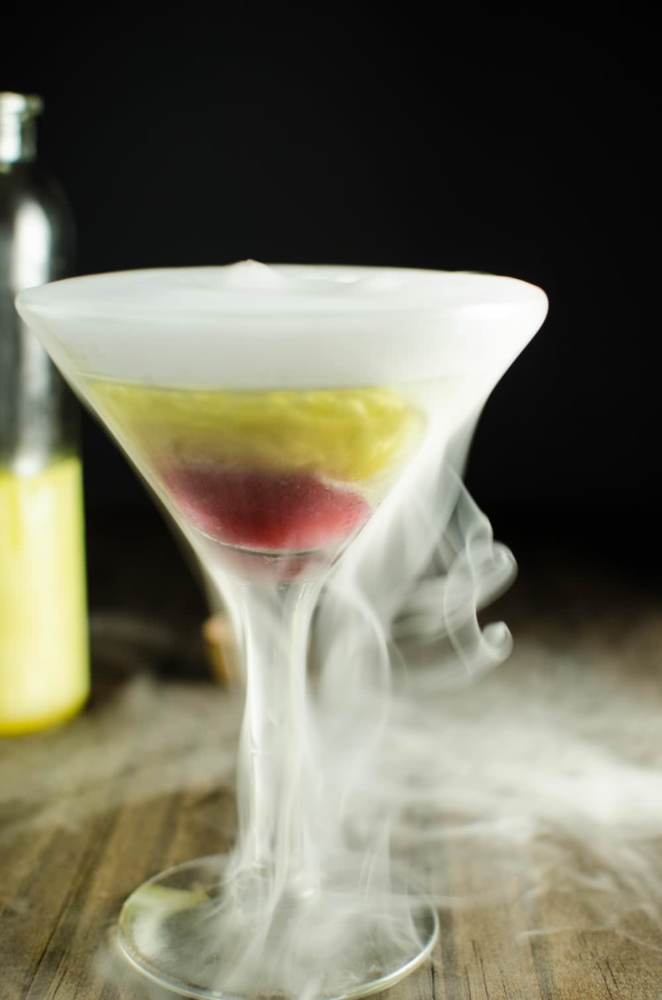
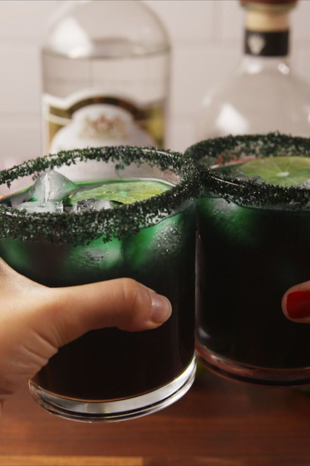

Food Recipes
Marshmallow Spiders
- 6 Marshmallows
- 48 Pretzel sticks
- 1 c. white chocolate, melted
- 1 tsp. coconut oil
- 18 Candy eyes
- Hot chocolate, for serving
More info...

Spooky Eyeball Tacos
- 1 lb ground beef
- 1 (1 1/4 ounce) package taco seasoning mix
- 12 taco shells
- 3⁄4 cup salsa
- 3⁄4 cup sour cream
- 1 tomatoes, small cubes
- 1 small head lettuce, sliced into small confetti squares
- 1 (2 1/4 ounce) canlarge black olives, sliced
- 1 cup cheese, Shredded & Long
More info...
Witches' fingers
- 1 cup butter, softened
- 1 cup confectioners' sugar
- 1 egg
- 1 tsp almond extract
- 1 tsp vanilla extract
- 2 2/3 cups all-purpose flour
- 1 tsp baking powder
- 1 tsp salt
- 3/4 cup whole almonds
- 1(.75 oz) tube red decorating gel
More info...
Ghost Pizza Bagel
- 8 slices of mozzarella
- 8 mini bagels
- 1/2 c. marinara
- 4 black olives
More info...
Mummy Hand Pies
- 1/4 cup canned pumpkin
- 2 T sweetened condensed milk
- 1/4 t ground cinnamon
- 1/4 t ground ginger
- 1/4 t ground nutmeg
- kosher salt
- Refrigerated pie crust
- Flour, for dusting
- 1 large egg
- 1/2 cup confectioners' sugar
More info...
Saucy Spider with Hairy Leg Sticks
- 2 balls pizza dough (thawed if frozen)
- 1 large egg
- 1/4 c. grated Parmesan (1 oz)
- 2 tbsp. grated Parmesan (1 oz)
- 1 large pitted black olive
- 2 c. marinara sauce
More info...
Drink Recipes

Good and Evil Cocktail
- 1 oz. vodka
- 1 oz. ApplePucker
- 1 oz. Midori
- 1 oz. triple sec
- 1 handful ice
- pineapple juice
- Sierra Mist
- lemon slice, for garnish
More info...

Unicorn Blood Cocktail
Raspberry Puree
- 7 oz raspberries
- icing sugar or powdered sugar to taste
- 3-4 tbsp water if needed
Shimmery Liqueur
- follow the recipe for shimmery liqueur - I used gold dust and peach vodka
- a pinch of purple luster petal dust - optional
More info...

Black Magic Margaritas
- 1/3 c. black sanding sugar
- 2 c. ice
- 4 oz. silver tequilla
- 2 oz. triple sec
- 1/2 c. lime juice
- red food coloring
- blue food coloring
- green food coloring
- lime slices, for garnish
More info...
Glowing Black Widow Oreo Pops
- 2 c. white chocolate chips
- 2 tbsp. tonic water
- 1 package paper straws or popsicle sticks
- 1.5 package oreos
More info...